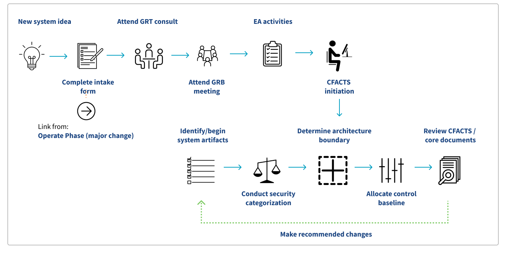

Initiate
Overview
The Initiate phase documents the general business need that the system intends to address, and provides Business Owners (BO) with available, CMS-validated solutions. If there is not an existing solution at CMS and a new one has to be implemented, a Life Cyle ID is assigned to the project and the Security Assessment and Authorization process begins.
To develop, document, and evaluate potential options for development, this process relies heavily on these key personnel:
- Business Owner
- Enterprise Architecture (EA) team
- Office of Information Technology (OIT) Navigators
- Subject Matter Experts (SMEs)
- Governance Review Team (GRT)
- Representatives from Security, Privacy, and Accessibility (for consultation)

Before You Get Started
The governance process exists to help Business Owners find out if a solution already exists at CMS before starting a new ATO. Cloud Computing, i.e.: Platform-as-a-Service (PaaS), Software-as-a-Service (SaaS), and Infrastructure-as-a-Service (IaaS) solutions should be considered, and a determination made if existing CMS/Department of Health and Human Services (HHS) vehicles can be leveraged. If a solution exists, there is no reason to spend time, effort and money recreating the wheel.
Initiate a New System Idea
All new business needs and material changes to existing systems must complete the Initiate phase. During this period, business needs must be documented, and alternative solutions considered.
The Business Owner will collaborate with knowledgeable stakeholders about CMS infrastructure and existing assets to define and document the general business need or enhancement, and explore and document solution options. These stakeholders often include:
- Information Security and Privacy Group (ISPG)
- Office of Acquisition and Grants Management (OAGM)
- Governance Review Team (GRT)
- Governance Review Board (GRB)
- Enterprise Architecture (EA) Team
- Technical Review Board (TRB)
- Office of Financial Management (OFM)
- Various Subject Matter Experts (SMEs)
Getting Started
If no solution exists, they will move forward with the governance process for a new system, receive a Life Cycle ID, and then follow the ATO process. The governance team can help the Business Owner with basic funding and contracting needs. ISPG leadership assigns a Cyber Risk Advisor (CRA) based on the CMS component organization the system will fall under, and the BO assigns an Information System Security Officer (ISSO). ISPG also assigns a Privacy SME to each project to support privacy related considerations.
Hosting
It is important to determine the primary hosting location for the solution. Hosting the solution within CMS—for example, CMS Cloud Services—instead of using vendor provided hosting locations is much preferred. Leveraging CMS hosting allows the team access to a significant amount of services from CMS. This saves time and money on compliance, so they don't have to worry about reducing cost on implementation to stay on budget. This should be the primary goal at this point in the process.
Appendix A
Appendix A is required to ensure that the contract includes security measures. The Business Owner, Privacy SME and CRA complete Appendix A and send it to OAGM to provision the contract.
Complete EASi Intake Form
If you decide to create a new solution at CMS, the Easy Access to System Information (EASi) system is the first step. EASi automates the governance process and helps connect you and your contract to funding at CMS, starting with an intake form.
The Business Owner starts an intake form in EASi to start the governance process and get a Life Cycle ID for their system. This is required for every CMS system, and key to securing funding for a new project.
Consult with Governance Review Team
Submitting the intake form engages the GRT, who works with the Business Owner, the EA team, and SMEs to create a business case for their system. The resulting case includes pros, cons, and alternative options. If the Business Owner decides to move forward with the ATO, this iterative, collaborative process should result in a strong business case to present to the GRB.
Present to the Governance Review Board
Once they have settled on a direction for their system, the Business Owner and/or their Navigator present their case. The presentation is reviewed by relevant SMEs followed by the GRB itself, which issues an assessment and provides one or more options for the Business Owner to pursue.
Complete Enterprise Architecture Activities
Once the Business Owner selects their chosen path forward, they will work with EA to complete a Core System Information Form. EA will then issue a User Identification (UID) number, which allows the project to be entered into the CMS FISMA Controls Tracking System (CFACTS). The Life Cycle ID and UID numbers will remain associated with the project for the duration of its life cycle.
Create an Authorization Package
CFACTS is a Government Risk and Compliance (GRC) tool used to track and manage the security and compliance of all CMS systems. Upon receipt of the UID number from EA, ISPG enters the system into CFACTS.
Going forward, the Business Owner and their team will work together with various stakeholders to complete the required ATO documentation in CFACTS. The specific documents required are based on many factors and vary from system to system, but all projects should expect to provide the following Tier 1 Documentation:
- System Security Plan (SSP)
- Information Security Risk Assessment (ISRA)
- Privacy Impact Assessment (PIA)
- Contingency Plan (CP)
- Contingency Plan Table Top Exercise (CPTT)
Additional documentation that is often required includes:
- Project management personnel and policies
- Security and privacy documentation
- Risk assessment and abatement
- Contingency plans
- Architecture diagrams
- Hardware and software inventories
- Privacy impact assessments
- Vulnerability scanning documentation
- Open Plan of Action & Milestones (PO&AMs)
- TRB Letter
- Configuration Management
- Baseline security configurations
- Configuration compliance audits policies
- Maintenance and update policies
- Compliance monitoring tool output
- Malware protection
- User ID conventions, group membership, and information system accounts for each component
- Audit documentation
- System procedures manual
- Job descriptions and personnel policies
- Physical access and remote work policies
- Data Use and Service Level Agreements
- Source code
- And others
Templates and more information is available in the CMS Information Security Library.
As you might imagine, collecting and entering all required information in CFACTS can take much time and resources. To avoid delays in your development process, it is important to start collecting your system documentation as soon as possible.
Categorize System Security
During the documentation process, the team will work together to add all required information in CFACTS. Once all required documentation is in CFACTS, the team will work together to categorize the system. At the end of this process, the system will be categorized as either High, Medium, or Low risk according to the Federal Information Processing Standards (FIPS) Publication 199. This will determine the required controls. In particular, they will determine whether it should be classified as a High Value Asset (HVA) System. HVAs require additional security measures due to their unique risks.
For reference, CMS has a FIPS 199 categorization tool in the Information Security and Privacy Library.
In addition to risk level, the system architecture, components and boundary are documented in CFACTS. The boundary separates what is part of the system from what is not. It is documented through network diagrams, hardware and software inventories, and narrative explanation.
Based on the information provided, the system is assigned a baseline of controls. These controls follow the CMS Acceptable Risk Safeguard (ARS) standard publication. The ISSO and project team will provide implementation details for each control in CFACTS. This often includes some back-and-forth between the development team, the ISSO and the CRA as the artifacts are reviewed and accepted.
Boundary Documentation
In addition to risk level, the system architecture, components and boundary are documented in CFACTS. The boundary separates what is part of the system from what is not. It is documented through network diagrams, hardware and software inventories, and narrative explanation.
Including an exemplary boundary diagram will facilitate the assessment of your system and expedite the ATO process. This includes what you’re directly responsible for building and maintaining and what your system is connected to and utilizing that someone else is responsible for building and maintaining. A good boundary diagram should:
- Include CMS shared services and how they connect to your system
- Show proxy - URL Filtering and whitelisting outbound traffic
- Separate S3 buckets for each Subnet
- Display zonal VRF between VDCs and AWS
- Include API Consumers internal access path(s)
- Depict all AWS Services being used
If the project team has questions or wants to discuss their specific design, they should email cms-trb@cms.hhs.gov.
Control Baseline
Based on the information provided, the system is assigned a baseline of controls. These controls follow the CMS Acceptable Risk Safeguard (ARS) standard publication. The ISSO and project team will provide implementation details for each control in CFACTS. This often includes some back-and-forth between the development team, the ISSO and the CRA as the artifacts are reviewed and accepted.